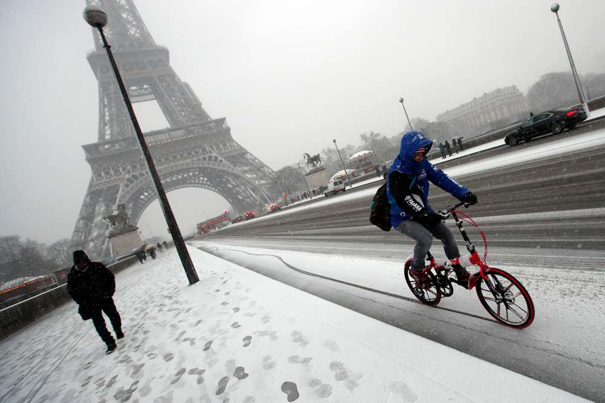
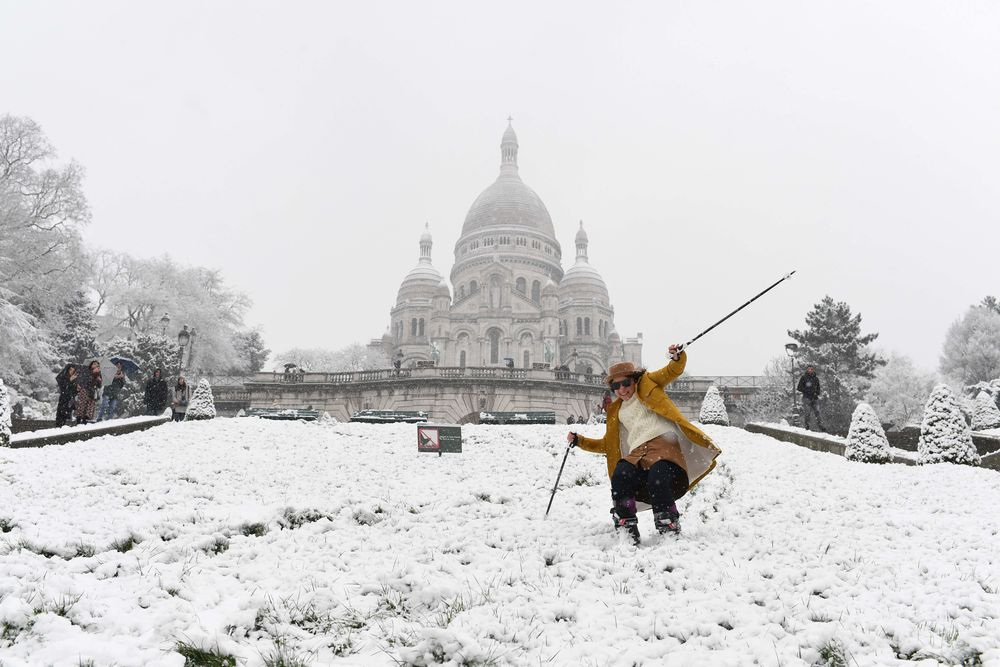
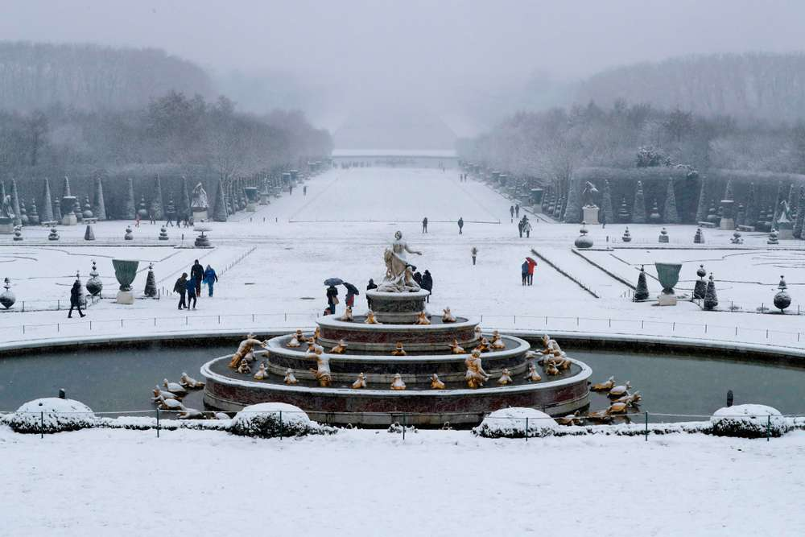

Surprise snowfalls trap Parisians in their homes
As was announced by the weather experts, Paris has experienced major snowfalls in the last few days, up to 12 centimeters (4.7 inches). While this much snow might seem trivial to some, particularly New Yorkers who have lived through blizzards in the last few years, it was enough to completely paralyze the capital. Trains are running late, buses stay parked, and cars are abandoned on highways. While some manage to see the bright side of things, most indulge in a wholesome Parisian tradition: being grumpy.


